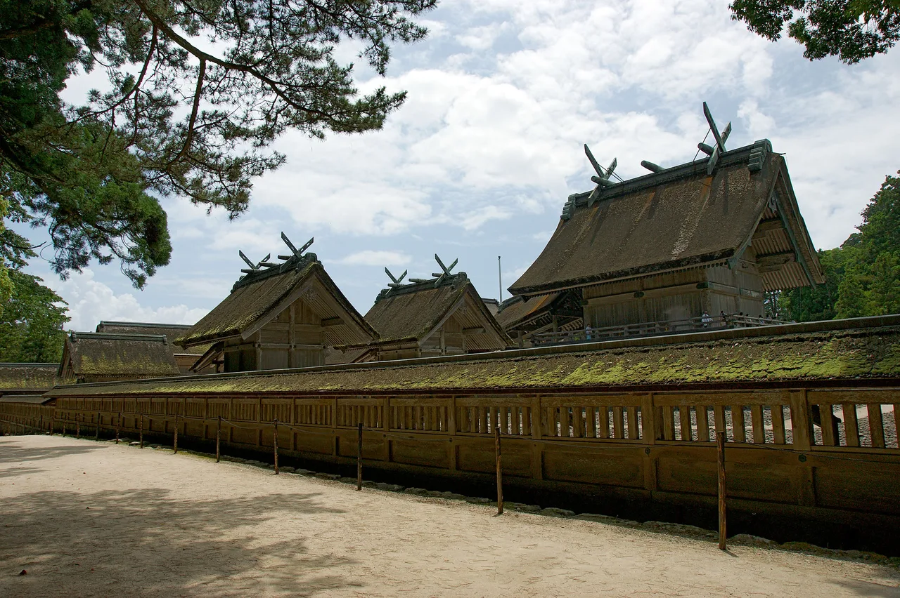

Shimane Panduan Wisata untuk Pelajar Bahasa Jepang
Rumah Izumo Taisha, salah satu kuil tertua dan terindah di Jepang.

Shimane penuh dengan mitologi. Izumo Taisha adalah salah satu kuil paling penting di negara ini, dan kota penghasil perak Iwami Ginzan adalah situs UNESCO.
Yang wajib dilihat
- Kuil agung Izumo Taisha
- Matsue Castle (menara asli)
- Tambang perak Iwami Ginzan (UNESCO)
- Taman Adachi Museum of Art
Beberapa tautan di atas adalah tautan afiliasi. Kami mungkin mendapat komisi tanpa biaya tambahan bagi Anda. Kami hanya mencantumkan layanan yang kami pakai sendiri.
Yang wajib dicoba
Izumo soba dan sup miso kerang Shijimi.
Cara ke sana & waktu terbaik
Cara ke sana: Izumo dan Matsue dapat dijangkau dengan pesawat dari Tokyo atau dengan kereta express terbatas dari Okayama.
Waktu terbaik: Segala musim; Oktober adalah 'bulan para dewa' yang mitologis di Izumo.
Di Izumo Taisha, para penyembah bertepuk tangan empat kali (bukan yang biasanya dua kali) — dua kali untuk diri sendiri, dua kali untuk pasangan.
Beberapa tautan di atas adalah tautan afiliasi. Kami mungkin mendapat komisi tanpa biaya tambahan bagi Anda. Kami hanya mencantumkan layanan yang kami pakai sendiri.